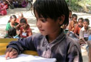

|
terre des hommes-Bilanz 2006
Knapp 500 Projekte für Kinder in 25 Ländern
Stabile Einnahmen im 40. Jahr des Bestehens von terre des hommes |
Das entwicklungspolitische Kinderhilfswerk terre des hommes hat im Jahr 2006 Spenden in Höhe von 14,7 Millionen Euro eingenommen und damit in 25 Ländern der Welt 496 Projekte für Not leidende Kinder gefördert. Diese Summe entspricht dem Ergebnis des Jahres 2004. »Bei Vergleichen mit dem Jahr 2005 muss man vorsichtig sein, da dieses Jahr auch bei uns durch die enorm hohen Tsunami-Einnahmen geprägt war. Im direkten Vergleich zum Jahr 2005 sind unsere Spenden 2006 um 43 Prozent zurückgegangen«, erklärte Peter Mucke, Geschäftsführender Vorstand von terre des hommes. »Da wir diesen Effekt in unseren Planungen für 2006 einkalkuliert haben, können wir mit dem Ergebnis sehr zufrieden sein«.
terre des hommes-Schwerpunkte für die nächsten drei Jahre seien Mucke zufolge die Hilfe für Kinderarbeiter, der Schutz von Kindern in gewaltsamen Konflikten, die Unterstützung von Kindern und ihren Familien, die von HIV/AIDS betroffen sind, und die Förderung der Ausbildung von Kindern. Ferner würden Gemeinschaften in der Dritten Welt dabei unterstützt, ihre Kultur und Tradition gegen die negativen Auswirkungen der Globalisierung zu verteidigen. »Mit jeder neuen McDonald’s-Filiale und jedem Starbuck-Coffeeshop verbreitet sich westlich geprägter Lebensstil überall auf der Welt«, so Peter Mucke. »In vielen unserer Projekte geht es darum, kulturelle Wertvorstellungen der Familien und Gemeinden, die oft als unmodern und rückständig gelten, zu schützen und an die Kinder weiterzugeben.«
Zum bevorstehenden G 8-Gipfel in Heiligendamm appellierte terre des hommes an die Bundesregierung, ihre G 8-Präsidentschaft zu nutzen und ihre Initiativen für die ärmeren Länder politisch zuzuspitzen. »Wir fordern, dass Überlebensfragen wie die Grundversorgung von Menschen mit sauberem Wasser, lebenswichtigen Medikamenten und Bildungschancen Vorrang vor den Regeln der Welthandelsorganisation und den Gewinninteressen internationaler Konzerne haben«, so Wolf-Christian Ramm, Pressesprecher von terre des hommes. Er kritisierte, dass zukunftsweisende Fragen zur Ausgestaltung der internationalen Beziehungen nach dem Motto »Dialog ja – Gleichberechtigung nein« ohne Vertreter aus Afrika, Asien und Lateinamerika beschlossen würden. Mit dem Wirtschafts- und Sozialrat der Vereinten Nationen (ECOSOC) gebe es stattdessen ein geeignetes Gremium, in dem alle Regionen der Welt vertreten seien, das allerdings mit politischer Entscheidungsbefugnis ausgestattet werden müsse.
Download des Jahresberichts als PDF-Dokument |
15. Mai: Internationaler Tag der Kriegsdienstverweigerung
Für Gewissensfreiheit und Frieden
Kriegsdienstverweigerung kann den Kreislauf der Gewalt durchbrechen |
»Der Einsatz von Minderjährigen in bewaffneten Konflikten muss ebenso aufhören wie die Zwangsrekrutierung von über 18-Jährigen«, fordern das Kriegsdienstverweigerernetzwerk Connection e.V., die Zentralstelle KDV (Zentralstelle für Recht und Schutz der Kriegsdienstverweigerer aus Gewissensgründen e.V.), sowie die Kinderhilfsorganisation terre des hommes aus Anlass des 15. Mai, dem Internationalen Tag der Kriegsdienstverweigerung. Gerade bei bewaffneten Konflikten wie in der Türkei oder in Kolumbien sei die Verwirklichung des Menschenrechts auf Kriegsdienstverweigerung ein Beitrag, den Kreislauf der Gewalt zu durchbrechen.
»Vor seiner ersten Wahl zum Präsidenten Kolumbiens«, berichtet der Kriegsdienstverweigerer Eduardo Castrillon von dem Jugendnetzwerk Red Juvenil aus Medellín, »hatte Alvaro Uribe versprochen, die Wehrpflicht in Kolumbien abzuschaffen, wenn die Berufsarmee erst einmal auf 100.000 Mann aufgestockt sei. Heute gibt es 187.000 Berufssoldaten in Kolumbien, doch die Wehrpflicht besteht weiter und Zwangsrekrutierungen gehören zum Alltag.« »Auch Minderjährige werden nach wie vor von der kolumbianischen Armee zu militärischen Hilfsdiensten herangezogen und Schulen zu militärischen Einrichtungen umfunktioniert«, berichtet Kinderrechtsreferent Ralf Willinger von terre des hommes. »Dies widerspricht internationalem Recht und macht Kinder und Jugendliche zu Zielscheiben, oft mit fatalen Folgen.«
In der Türkei wurde zuletzt der Kriegsdienstverweigerer Halil Savda am 12. April 2007 zu einer zweiten Haftstrafe und insgesamt 21½ Monaten Gefängnis verurteilt, kurz nachdem das Europäische Parlament seine Besorgnis über die Urteile gegen Kriegsdienstverweigerer in der Türkei ausgesprochen und darauf hingewiesen hatte, dass »das Recht auf Kriegsdienstverweigerung in der Europäischen Charta der Grundrechte anerkannt ist«. Der Europäische Gerichtshof für Menschenrechte hatte es als »unverhältnismäßig« bezeichnet, dass in der Türkei Kriegsdienstverweigerer wiederholt einberufen, bis zu acht Mal wegen Befehlsverweigerung oder Desertion verurteilt und nicht aus dem Militärdienst entlassen werden.
»In Deutschland wird die Verfolgung von Kriegsdienstverweigerern jedoch immer noch nicht als Asylgrund anerkannt«, kritisiert Rudi Friedrich von Connection e.V. »Hier ist dringend eine Änderung erforderlich.«
Seit 1985 finden am Internationalen Tag der Kriegsdienstverweigerung weltweit Aktionen gegen Wehrpflicht und militärische Zwangsdienste statt. Red Juvenil ist ein langjähriger Partner von Connection e.V. und terre des hommes-Deutschland. In Kolumbien hat sich durch Jugendorganisationen wie Red Juvenil eine Friedenskultur entwickelt, die mit Friedenserziehung, Kunst, kreativen Aktionen und Protesten Alternativen zur Gewalt als Mittel der Konfliktlösung aufbauen.
Weitere Informationen:
|
Zum Muttertag faire Blumen verschenken! |
Zum Muttertag am 13. Mai ruft das entwicklungspolitische Kinderhilfswerk terre des hommes Verbraucher auf, Blumen aus heimischer Produktion oder dem fairen Handel zu verschenken. „Ob Flower Label-Blumen im Fachhandel, oder Sträuße mit dem Fairtrade-Siegel im Supermarkt: Jeder dieser Blumengrüße gibt dem Käufer und der Beschenkten die Gewissheit, dass die Rechte der Arbeiterinnen auf den Blumenplantagen im Süden gewahrt, die Frauen vor Pestizidvergiftungen geschützt und die Mindestlöhne gezahlt werden“, so Claudia Ehlers, Kinderrechtsreferentin von terre des hommes. „Dadurch werden die Lebensbedingungen der Familien insgesamt verbessert. Und so sinkt auch die Wahrscheinlichkeit, dass Kinder dieser Frauen auf Grund des Pestizideinsatzes mit Missbildungen geboren werden oder die Kinder gezwungen sind, selbst Geld zu verdienen.“
terre des hommes weist darauf hin, dass anders als in den Großmärkten im Blumenfachhandel eine direkte Auszeichnung der Ware nicht möglich sei. Informationen über die Einzelhandelsgeschäfte in Deutschland, die fair gehandelte Blumen verkaufen, sind jedoch auf der Website des Flower Labels (www.fairflowers.de) zu finden. In der gerade erschienenen terre des hommes-Broschüre „Kinderarbeit – Was Verbraucher und Unternehmen tun können“, liegt eine aktuelle Liste auch in gedruckter Form vor.
Die Blumen mit dem Fairtrade-Siegel gibt es bei REWE, bei Edeka in Baden-Württemberg, Saarland, Rheinland.-Pfalz und in Teilen von Hessen und Bayern, bei Kaisers’s Tengelmann in Süddeutschland sowie im Blumenfachhandel und bei Blumen Risse. |
|
|
|
 Ansprechpartner Ansprechpartner
|
|
Wolfgang Deppisch
(Projektinfos)
Tel. 07222 / 32927
Heinz Wolf
(Sponsoring, Allgemeines)
Tel. 07225 / 75543
weitere Ansprechpartner
|
|
Erlöse
1992-2012
|
|

Jahr |
Euro |
1992 |
70.000 |
1993 |
75.600 |
1994 |
83.883 |
1995 |
69.617 |
1996 |
51.412 |
1997 |
61.749 |
1998 |
60.333 |
1999 |
68.742 |
2000 |
85.492 |
2001 |
106.375 |
2002 |
78.937 |
2003 |
84.027 |
2004 |
76.662 |
2005 |
149.941 |
2006 |
84.497 |
2007 |
105.958 |
2008 |
104.053 |
2009 |
100.833 |
2010 |
107.254 |
2011 |
103.600 |
| 2012 |
158.250 |
| 2013 |
163.420 |
1977-2013 |
mehr als 2,7 Mio. € |
|
Detailansicht der Erlöszahlen |
|
|


;)